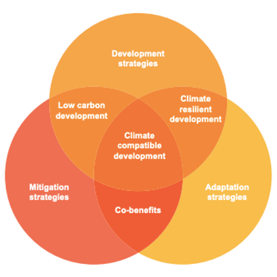
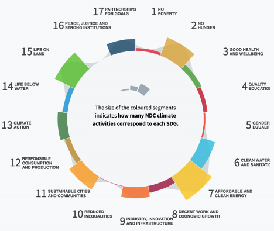
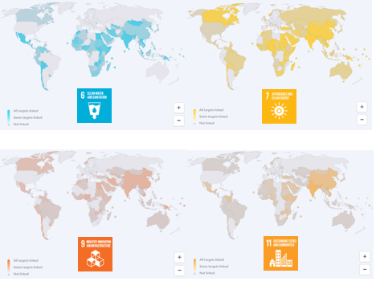

This lecture looks beyond the Sustainable Development Goals (SDGs) at how infrastructure planning can be further shaped by climate change targets through the Paris Agreement. While this draws on much of the material from Lecture block 2, it presents emerging research on the alignment of these two agendas in the run-up to the next Conference of the Parties (COP) as countries aim to set a vision for climate and development.
To describe the policy relevance of the concept of ‘climate-compatible development’
To relate methods by which researchers have attempted to understand interactions between climate and development targets in policy documents.
The Nationally Determined Contributions (NDCs) provide a formalised mechanism for countries to communicate their commitments to maintaining climate change to under 2° C. Although climate targets are reflected in SDG 13 (Take urgent action to combat climate change and its impacts), actions to mitigate greenhouse gases can also contribute to a country’s wider development targets, for example by supporting access to clean energy, reducing health effects of indoor and outdoor air pollution, and promoting reforestation efforts that protect the natural environment (Ürge-Vorsatz et al. 2014; Fuso Nerini et al. 2019). Indirect impacts of these types of actions extend widely across the SDGs, including through poverty reduction, equality, and education. National infrastructure and land use planning will encompass the vast majority of these actions. The challenge is: how can climate and development targets be harmonised within a common framework which responds to specific challenges faced in each country?
This lecture will explore in more depth the range of climate actions and targets used throughout the NDCs and the degree to which these commitments link with SDG targets. It will provide an indication of the level of ambition shown by countries in their mitigation commitments. Finally, it will consider ways in which identified country-specific challenges can be used to define targets as part of a sustainable infrastructure strategy.
The Paris Agreement’s ‘ambition mechanism’ stipulates that the 195 countries party to the agreement are expected to update and communicate their pledges (NDCs) to further reduce greenhouse gas emissions on a five-year basis and strengthen their mitigation and adaptation responses to climate change (UNFCCC 2015). Meanwhile, national governments must continue to address development challenges and improve upon performance across a range of social, economic, and environmental outcomes to achieve the 2030 Agenda (SDGs). This provides a great opportunity for policy integration: by requiring each party to draft its commitments in the form of Nationally Determined Contributions, the Paris Agreement offers a formalised mechanism through which to assess and compare countries’ approaches to integrating mitigation and national development goals, specifically those set according to the SDG framework (Adshead 2021). While the world’s highest emitters are generally advanced economies or large, industrialised powerhouses such as China and India, non-Annex countries, which include most countries from the developing world, are not legally bound to reduce emissions by the agreement. This creates an opportunity to incentivise mitigation action by linking it directly to associated development outcomes which will be of interest to policymakers (Adshead 2021). The challenges of defining a framework for merging climate change mitigation – and adaptation – actions with development outcomes suited to a wide range of global contexts has brought about the concept of ‘climate-compatible development’ (Figure 5.3.1) (Mitchell and Maxwell 2010), which has provided an appealing triple-win framework for the assessment of development projects across multiple sectors (Suckall, Stringer, and Tompkins 2015; England et al. 2018). It has, however, faced critiques and calls for reconceptualisation in order to better align the mitigation and development agendas (Janetos et al. 2012; Winkler et al. 2015).

Figure 5.3.1: The ‘climate-compatible development’ framework, linking adaptation, mitigation, and development strategies (Mitchell and Maxwell 2010)
Previous initiatives have examined the points of intersection between the Paris Agreement and the SDGs.
By conducting key word searches, discourse analysis, and extracting and coding pledged climate activities, researchers can get a sense of alignment between the two agendas – although these are largely expressed qualitatively (Northrop et al. 2016; Dzebo et al. 2019). However, this allows avenues for policy coherence to be explored at the country level (Nguyen 2018). Furthermore, priority areas for thematic coherence between the two agendas, such as energy efficiency, sustainable forest management, and sustainable agriculture, can be identified (Janetschek et al. 2020), as can those that are under-prioritised in NDC activities (Dickin and Dzebo 2018). Figure 5.3.2 indicates the distribution of NDC activities in relation to all 17 SDGs.

Figure 5.3.2: Distribution of NDC activities in relation to the Sustainable Development Goals (Dzebo et al. 2019)
In Figure 5.3.3, we see that this alignment between the NDCs and SDGs is widespread, particularly in those targets encompassing infrastructure sectors (e.g. 6, 7, 9, 11), when we consider all targets, actions, policy measures, and needs highlighted in countries’ NDCs, including the adaptation components.

Figure 5.3.3: Linkages between NDCs and infrastructure-focused SDGs (ClimateWatchData 2020)
While these studies provide a basis for assessing general alignment between these two agendas, they do not go as far as to address countries’ SDG achievement gaps and their potential elimination through specific sectoral actions or targets (Adshead 2021). By focusing on the mitigation component of climate targets, we can aim to narrow down specific actions that might be incorporated as part of an infrastructure strategy to fill these gaps.
While most countries commit to a certain level of emissions reduction in their NDCs, which may be presented by sector, these commitments must be backed up by proposed policy actions if they are to be effective.
Most countries have signalled intentions to boost the ambition of their NDCs (see Lecture block 2). Despite this, many countries have faced barriers due to financial considerations, identification of appropriate policy options, and political priorities (Van Tilburg et al. 2018). This includes many less-developed countries, which have a lot to gain in terms of sustainable development benefits from a shift to a low carbon economy. Given this, it seems that the commitments currently pledged by many countries do not fully align with their development needs.
Levels of commitment to mitigation action vary across infrastructure and land use sectors, as demonstrated in the first round of NDCs submitted by most of the world’s countries. A large number of these contain qualitative commitments only, and many contain no sectoral targets at all, including at least half of NDCs for the transport, waste, agriculture, and forestry sectors (Adshead 2021).
Some patterns emerge here, which can be tied back to context-specific challenges presented in mini-lecture 1.4. Ambitious renewables targets are common in small island countries where energy independence will be crucial to future economic security. Transport-specific planning is more often evident in countries with rapidly urbanising populations. Avoiding deforestation and focusing on reforestation efforts is common in the tropics as well as arid countries where desertification is a threat. Many countries in Africa and Asia emphasise mitigation measures in agriculture, which accounts for a large share of national income (Adshead 2021).
In the current NDC landscape, many countries are incentivised to justify lower levels of ambition – due to low historical emissions – rather than to pursue enhanced benefits through stronger commitments (Mills‐Novoa and Liverman 2019). With a close alignment of the SDG and NDC decision-making frameworks, these policy mechanisms can be set up using a more evidence-based approach that operationalises NDC commitments to deliver on development benefits tailored to each specific country context.
For example, Adshead (2021) provides a means of identifying specific indicators that are linked to SDG target achievement – as in mini-lecture 5.2 – but which can also define actions taken as part of a climate mitigation strategy. From this, we can quantify progress on SDG targets and sustainability dimensions described in terms of renewable energy share, as well as the emissions reductions enabled by the action.
Such a framework seeks alignment and synergies between climate pathways and development goals, including non-climate dimensions, with implications for infrastructure planners. While recognising the wide potential for development co-benefits, it defines the need for specific mitigation targets and actions based on existing outcomes and gaps. In addition, policymakers can take a contextualised approach to assessing the impacts of specific NDC actions according to the challenges faced in their countries. This type of analysis produces more concrete proposals for action (Adshead 2021).
This lecture has introduced the importance of methods that draw on the ‘climate-compatible development’ framework. It has assessed ways in which researchers look to consolidate climate and development targets in national policy documents. Within the NDCs, current ambition as regards mitigation action in infrastructure and land use policy has been described, with a call for a framework that better integrates these two areas to bring about concrete policy actions.